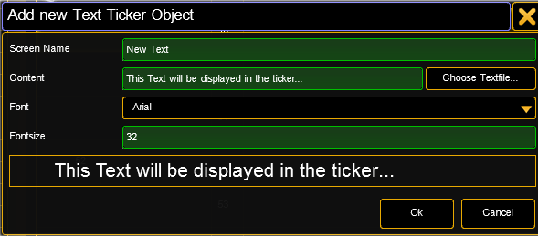

Text Ticker elements can be inserted into free content slots. Do a right mouseclick into the 'Clip/Image’ column slot and select 'Insert Text Ticker'. The following dialog appears:

| Screen Name: | Name of the Channel Set in the console |
| Choose Textfile…: | Browse to a text file (*.txt) This text file is part of the Content Distribution triggered from the grandMA2 console if "Distribute Show Content" is selected. Be sure that it is available on all VPUs in the session in the same location as any other content. |
| Content: | Enter the text to be displayed in the ticker |
| Font: | Choose the font types that are included |
| Fontsize: | Choose the size of the displayed text |
Already created Text Ticker items can be adjusted by using the option "edit" in the context menu. To display the Text Ticker item on screen, simply select it via the IPool / Image Channel.
Four attributes allow the use of the text ticker
Compos Type: Choose how the Text Ticker is animated
Compos Speed: Choose how fast the animation is done
Compos P1: Choose how long the pause in the middle of the animation is
Compos P2: For Future Use (currently not implemented)
The animation can be edited via the grandMA2 command line (incl. import and export). The animations are based on keyframes. They can be adjusted or new frames can be added. They are located in the PixelMapperContainer/Videocompositioncontainer.